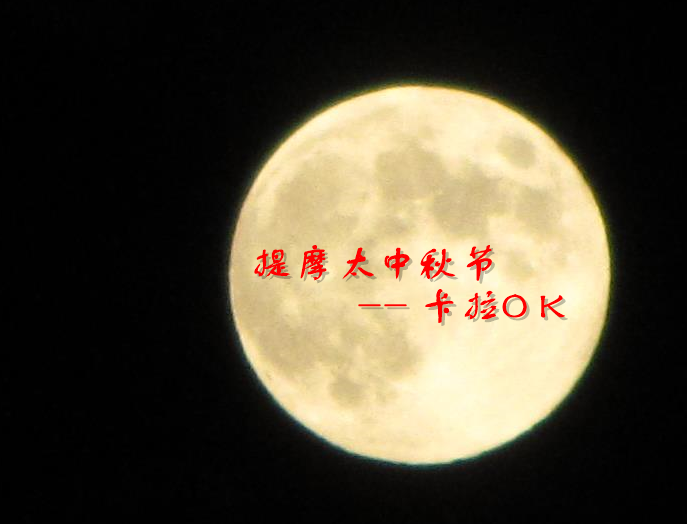

A
愛， 我願意
爱 的真谛
愛 是不保留
愛 的代價
爱 的奉献
愛拼才會贏 - 葉啟田
B
宝贵十架
把悲傷留給自己 - 陳昇
北京人在紐約
C
彩 虹下的约定
唱一首天上的歌
成 为我异象
賜 福與你
從前所珍愛
沧海一声笑 - 徐克/罗大佑/黄沾
长 江之歌
城裡的月光 - 許美靜
D
大 海啊，故乡
大 号是中华
大学问 - 汕头大学
大約在冬季
但願人長久 - 鄧麗君
當 愛已成往事
读 你
E
恩典的記號
恩 典之路
G
God will make a way
感 谢神
給 我一個中國心
古 旧十架
乾杯 - 五月天
橄欖樹 - 齊豫
光輝歲月 - Beyond
給自己的歌
故 鄉的雲
H
何 等恩典
活出爱
好的事情 - 嚴爵
紅蜻蜓 - 小虎隊
红日 - 李克勤
J
脚步
酒矸倘賣無
K
哭沙 - 黃鶯鶯
L
恋 曲1990
鲁冰花 - 甄妮
M
馬 槽聖嬰
夢醒時分
明天會更好
N
你的爱不离不弃
你 信实何广大
你坐着为王
年 輕的朋友來相會
O
One Night in 北京
P
朋友 - 谭咏麟
朋友別哭 - 呂方
飄洋過海來看你 - 劉明湘
蒲公英的约定 - 周杰倫
Q
起 來吧
齊 來信主聖徒
奇 異恩典
傾 聽我的心
親眼看見袮
全 然向你
恰似你的溫柔
牵手 - 苏芮
情 歌 - 梁静茹
青 藏高原
R
如 鹿切慕
如鹰展翅上腾
让 赞美飞扬
S
闪烁的小火花
詩 篇133篇
三萬英呎 - 迪克牛仔
上 海滩
Shall We Talk
世上只有 - Joey Yung
时间都去哪儿了 - 姚贝娜
十 五的月亮
送 别
T
陶 造我生命
天 父必看顧你
天 父的花园
她說 - 林俊傑
甜 蜜蜜
天涯孤客 - 鄭少秋
童 年
同桌的你 - 老狼
W
我 們愛讓世界不一樣
我 要向高山举目
我 一生要讚美你
我 知谁掌管明天
外面的世界 - 齊秦
外 婆的澎湖湾
万 里长城永不倒
萬 水千山總是情
我的未來不是夢 - 張雨生
我是一只小小鸟 - 赵传
我只在乎你 - 鄧麗君
X
獻 上感恩
相 约在主里
尋找
鄉 間小路
小城故事 - 邓丽君
笑忘歌 - 五月天
小幸運 - 我的少女時代
瀟灑走一回
星星点灯 - 郑智化
Y
野 地的花
耶 稣爱你 - 蔡琴
耶稣爱我
耶 稣恩友
耶 和华的心
耶 和华，你是我的神
耶 和華是愛
一 件禮物
因祂活著
永恒的答问
有一天
有 一位神
與 你同走過
愿 耶和华赐福给你
烟 花易冷
阳光总在风雨后
一 封家书.
一 剪梅
一路上有你 - 张学友
一生何求 - 陳百強
驛動的心 - 姜育恆
因为爱情 - 陈奕迅/王菲
友谊地久天长
友 誼之光
幼稚園 - Twins
遇 見
月半小夜曲 - 李克勤
月 亮代表我的心
Z
赞 美之泉
这 一生最美的祝福
主 赐福如春雨
主的愛
主 恩典够我用
主耶稣爱我
主若是
转回
最 珍貴的角落
最 知心的朋友
注 目看耶穌
足印
坐 在宝座上圣洁羔 羊
再回首 - 姜育恒
再見 - 小虎隊
真心英雄
至 少還有你
祝福 - 張學友
烛 光里的妈妈